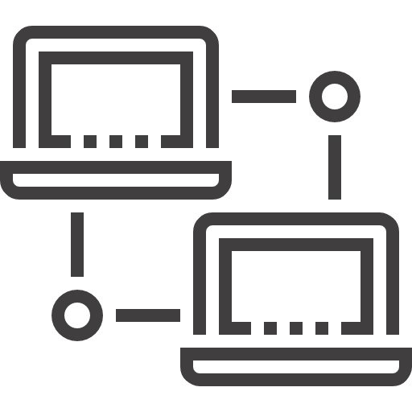

O software LanControl facilita processos em salas de aula e redes locais, otimizando o tempo e proporcinando total controle remoto dos computadores
Através da tecnologia Wake on Lan é possível acionar e desligar máquinas remotamente, utilizando nosso aplicativo Mobile ou Desktop
